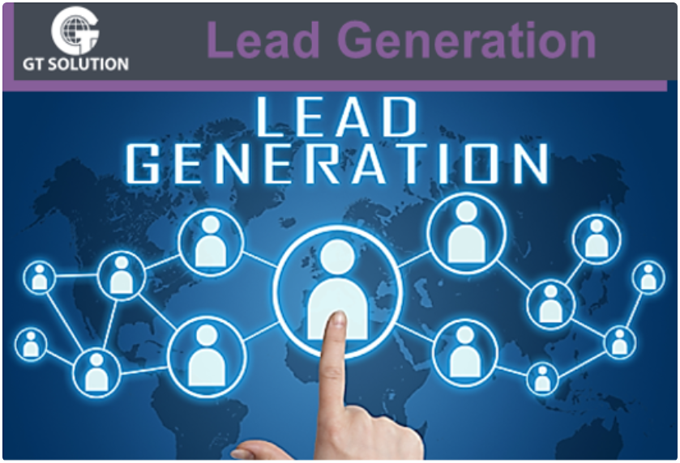

De oude manier van koude acquisitie is vaak niet efficiënt en kost enorm veel tijd. Daarom wil je kwalitatieve warme leads, waardoor je met minder tijd en energie beter kan scoren. Hoe krijg je die warme leads? De mogelijkheden zijn oneindig, maar wat werkt het best en hoe krijg je een zo hoog mogelijke conversie in jouw specifieke branche? Daar helpen wij je graag mee!